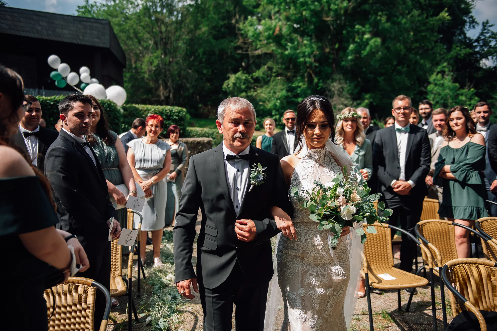
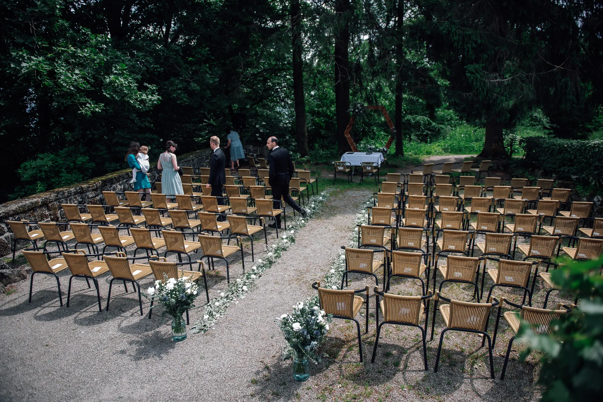
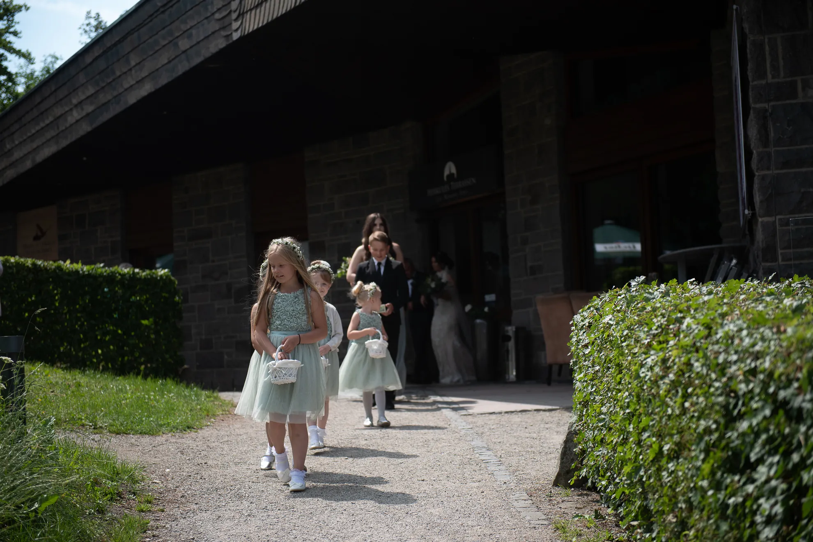
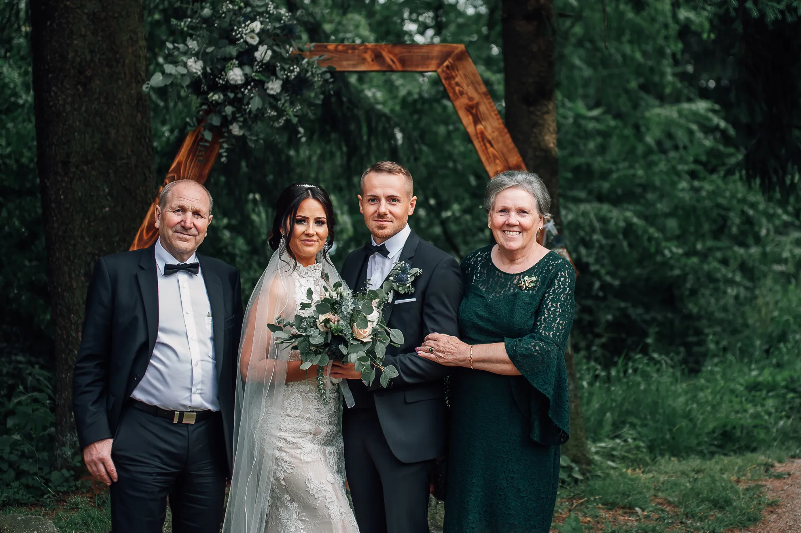
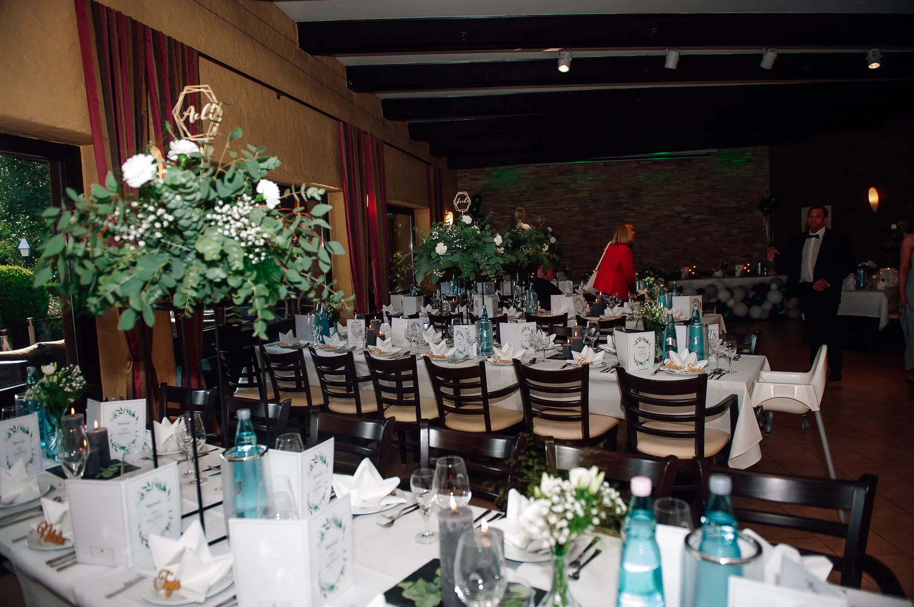

Hochzeitsreportage
E & E — Herkulesterrassen Hochzeit Kassel
Eine freie Trauung voller Ruhe, Nähe und Sommerlicht über Kassel
Zwischen Terrassen, Bäumen und weitem Blick entstand ein Hochzeitstag, der sich nicht groß gemacht hat, um groß zu wirken.
Eine Herkulesterrassen Hochzeit in Kassel fühlt sich anders an als viele andere Feiern in Nordhessen. Die Lage oberhalb der Stadt, die Nähe zum Bergpark Wilhelmshöhe und die historische Atmosphäre rund um den Herkules geben dem Tag Weite, ohne ihn unnahbar wirken zu lassen. Genau diese Mischung macht die Location so stark für emotionale Reportagen.
E & E haben ihren Tag in sechs Kapiteln gefeiert: Ankunft, freie Trauung, Sektempfang, Gästefotos, Brautpaar-Shooting sowie Location & Brauch. Für das Storytelling ist das ideal, weil der Ort nicht nur schön aussieht, sondern die ganze Reportage trägt. Für SEO heißt das ganz bewusst: eine emotional erzählte und zugleich klar verankerte Seite rund um das Suchthema Herkulesterrassen Hochzeit Kassel.
Ankunft zwischen Grün und Vorfreude
Noch bevor die Zeremonie beginnt, erzählt der Ort schon seine eigene Geschichte. Die ersten Gäste kommen an, suchen ihre Plätze, begrüßen sich und schauen in die Bäume hinein, als würde die Feier dort schon in der Luft liegen. Gerade bei einer Hochzeit in den Herkulesterrassen Kassel ist dieses ruhige Ankommen ein echter Teil der Atmosphäre.




Freie Trauung unter Bäumen
Die freie Trauung war der emotionale Mittelpunkt dieses Tages. Offen, aber nicht verloren. Feierlich, ohne starr zu wirken. Genau darin liegt für viele Paare der Reiz einer Herkulesterrassen Hochzeit in Kassel: Die Landschaft gibt Raum, und trotzdem bleibt alles nah genug, um jede Regung zu fühlen.
„Zwischen den Bäumen wurde aus Vorfreude Gewissheit.“


Sektempfang mit gelöster Leichtigkeit
Nach dem Ja kippt die Stimmung ganz sanft in den freien Teil des Tages. Gläser heben sich, Umarmungen werden länger, und aus Spannung wird Wärme. Diese Übergänge erzählen in einer Reportage oft am meisten über die Menschen, die dabei waren.

Gästefotos, die natürlich bleiben
Gruppenbilder müssen nicht wie ein Einschnitt wirken. Vor dem floralen Rahmen und im weichen Grün der Umgebung entstehen hier Bilder, die klar aussehen und trotzdem leicht bleiben.


Brautpaar-Shooting mit Wald, Stein und Ruhe
Für ein gutes Brautpaar-Shooting braucht es hier keinen großen Ortswechsel. Wege, Naturstein, Schatten, offene Flächen und die Nähe zum Park geben genug Varianz, ohne den Tag zu unterbrechen. Für E & E war genau das perfekt: intime Bilder, die leicht bleiben und trotzdem charaktervoll wirken.
„Es brauchte keinen großen Auftritt, nur die zwei und diesen Ort.“


Location, Details und Brauch am Abend
Wenn der Tag in die Abendstunden kippt, wird die Reportage oft noch einmal dichter. Tischbilder, Kerzen, florale Details und kleine Rituale halten fest, wie sich die Feier angefühlt hat. Gerade diese Mischung aus Architektur, Dekor und persönlichen Gesten macht die Herkulesterrassen Hochzeit Kassel fotografisch so rund.



Plant ihr eure Hochzeit in den Herkulesterrassen?
Wenn ihr euch eine Reportage wünscht, die eure Hochzeit in Kassel echt, ruhig und mit viel Gefühl erzählt, begleite ich euch gern.
Weitere Reportagen